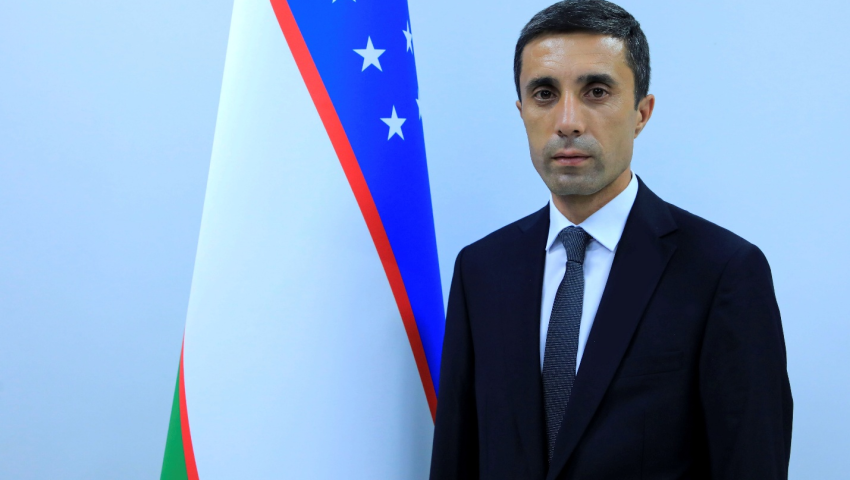

Texnologiya fakulteti dekani
Mallabayev Odiljon Toxirjanovich
Qabul vaqti: Juma 16:00 dan 18:00 gacha
Telefon: +998 94-270-77-22
Elektron pochta: omallabayev@mail.ru
Mehnat faoliyati
2006-2010 yy. - Namangan muhandislik-pedagogika instituti talabasi
2023-2025 yy. - Namangan muhandislik-texnologiya instituti “Kimyo-texnologiya” fakulteti dekani
2025 y. - h.v. - Namangan davlat texnika universiteti “Texnologiya” fakulteti dekani
